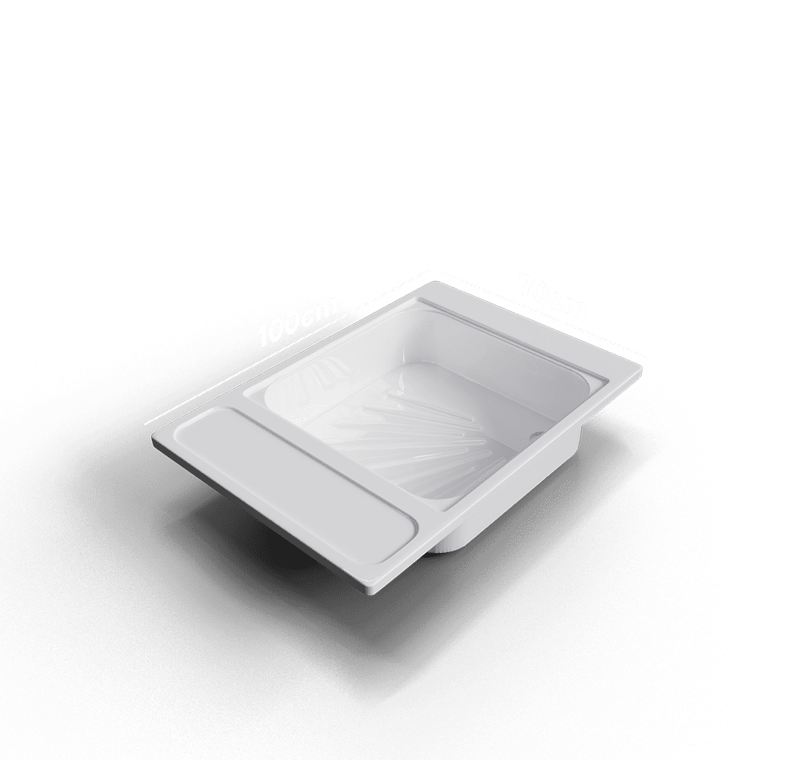
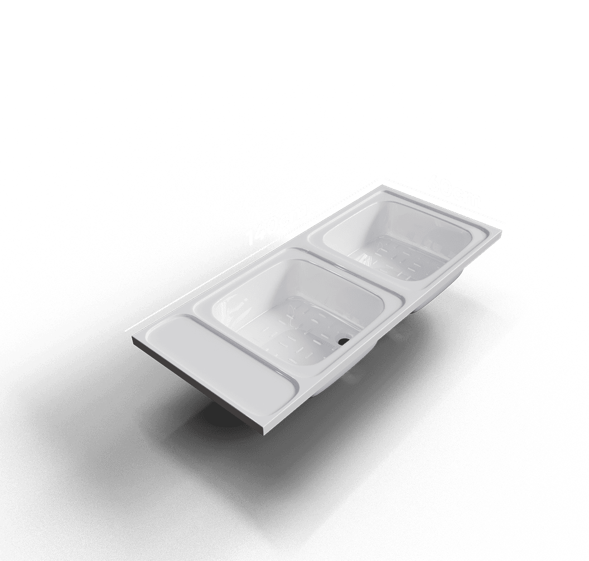
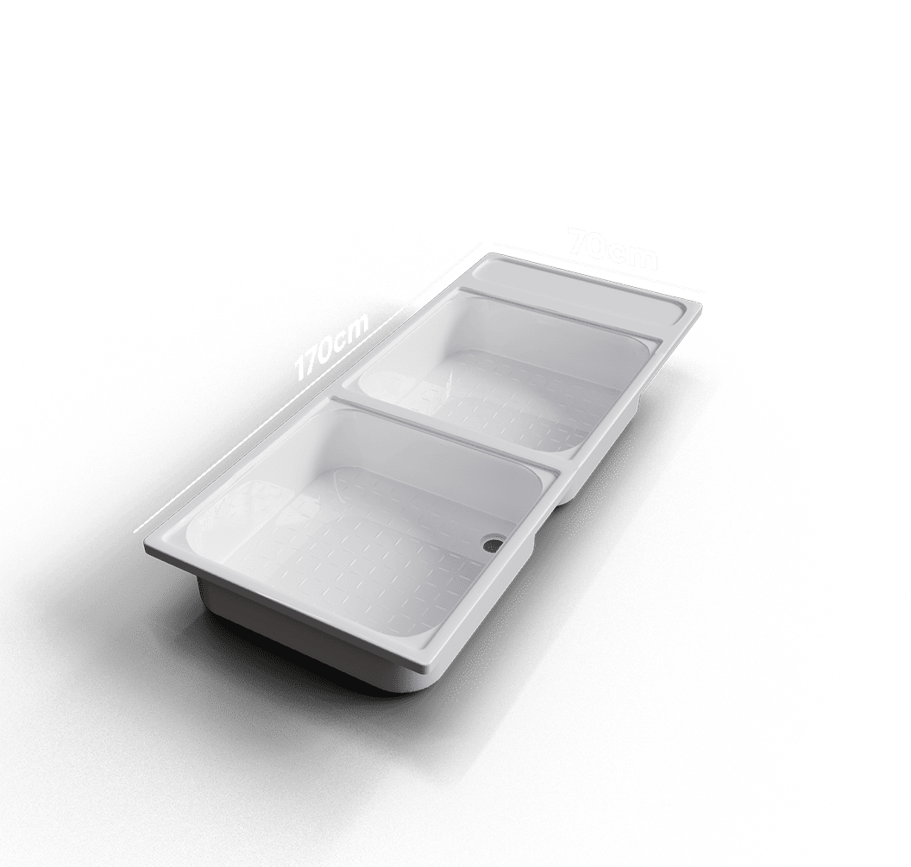
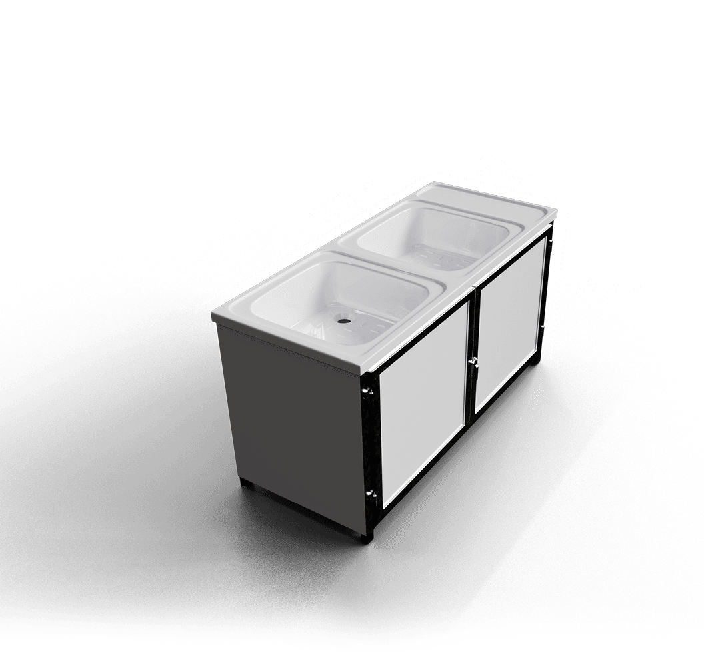
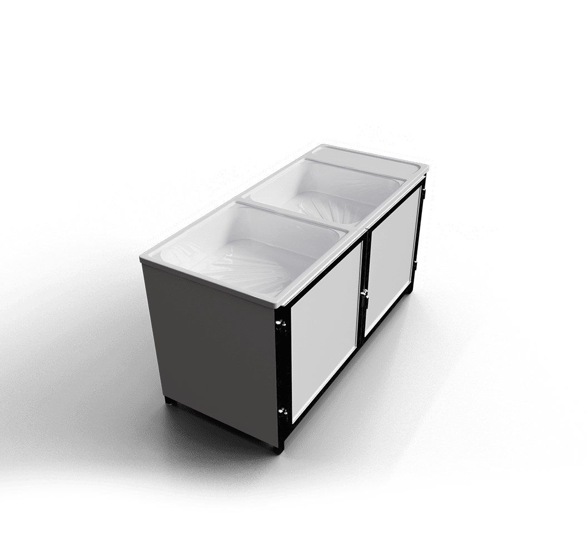
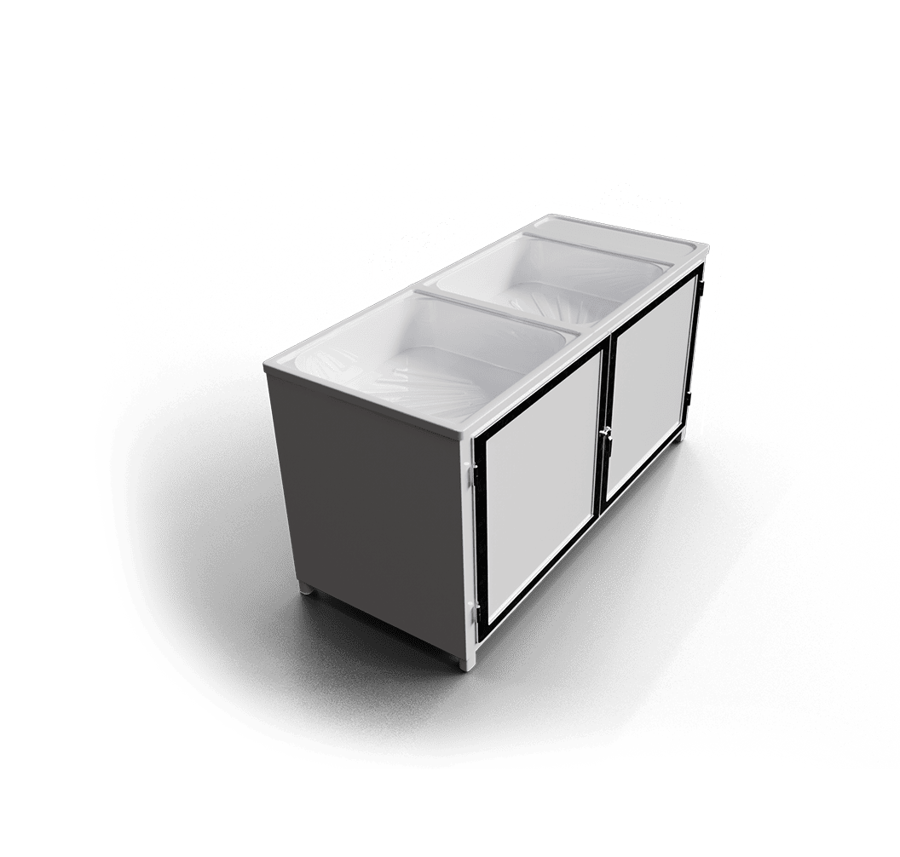
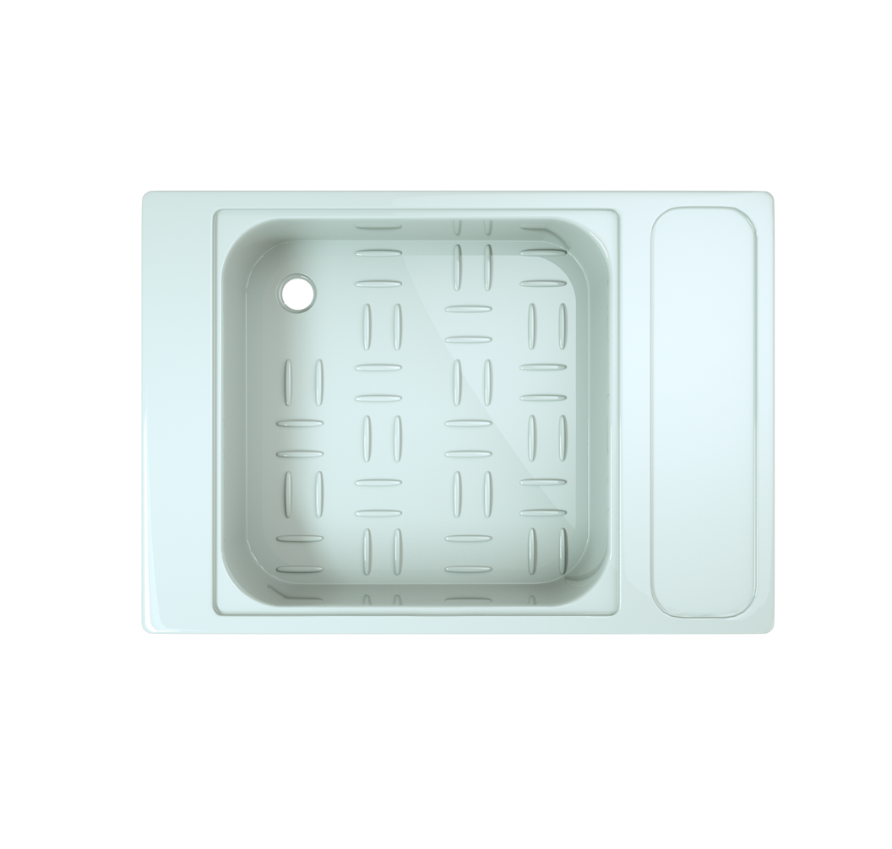

"Feel free to reach out to us if you have any customization requirements for our products."
Addis Ababa,Ethiopia
Email
+251946313131
© 2025 Super Double "T" General Trading plc. All Rights Reserved.